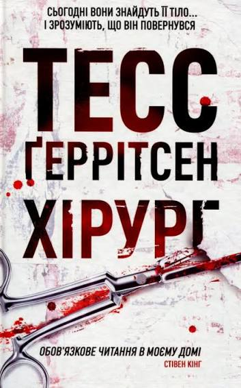
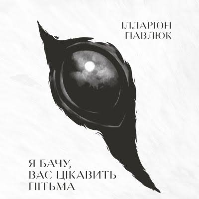
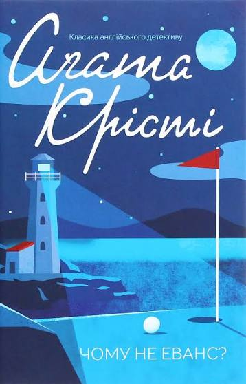
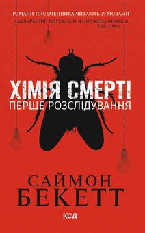
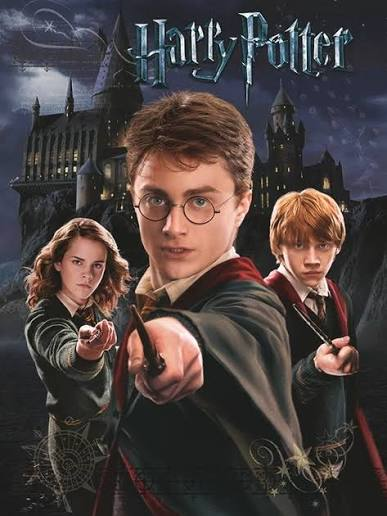
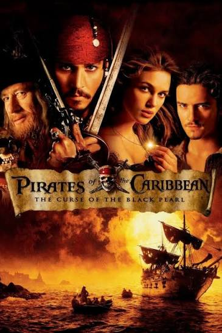
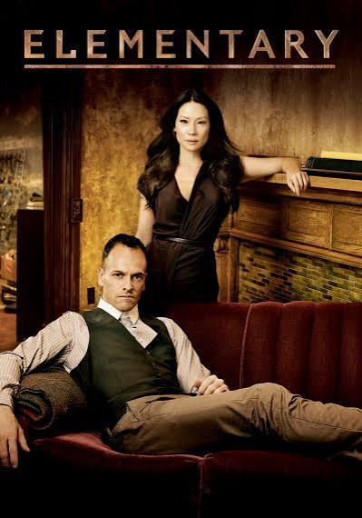
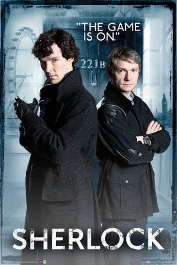
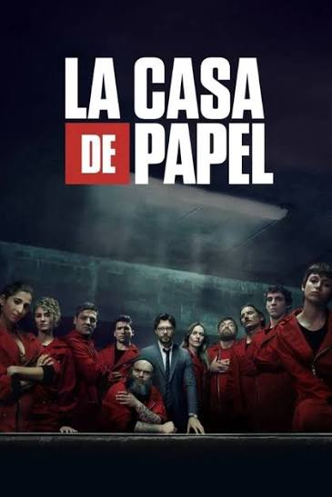

Хореографія та танці
Рух, пластика, музичність і спосіб перезавантажити розум через фізичну експресію.

Мене звати Анна Здравка. Я студентка третього курсу Львівського національного університету імені Івана Франка за спеціальністю «Прикладна математика та інформатика».
У своїй діяльності поєдную точність математичного аналізу з творчим підходом, цікавлюся тестуванням програмного забезпечення та викладанням. Прагну перетворювати теоретичні знання на якісні практичні рішення й постійно опановую нові технології.
Навчальний заклад: Мурованський ліцей (с. Муроване)
Роки навчання: –
Я навчалася у Мурованському ліцеї з 2013 до 2024 року. Шкільні роки для мене — це не лише уроки, оцінки та підготовка до іспитів. Саме в школі я зустріла людей, які стали для мене близькими друзями, навчилася працювати з іншими та поступово почала розуміти, що мені справді цікаво.
Особливо ціную те, що школа дала мені не тільки знання, а й багато спогадів, які залишаться зі мною надовго. Саме там сформувалася моя любов до математики та бажання розвиватися далі.
Львівський національний університет ім. І. Франка
Спеціальність: Прикладна математика та інформатика
Курс: 3-й курс
Улюблені дисципліни: Функціональний аналіз, математичний аналіз, фінансовий інтелект.
Рух, пластика, музичність і спосіб перезавантажити розум через фізичну експресію.
Українська література XX століття (зокрема доба Розстріляного відродження та шістдесятники), а також професійний і розвиваючий нон-фікшн.
Не просто робота, а щире захоплення процесом: запалювати інтерес до математики та показувати її логічну красу.
Дисципліна, витривалість, тренування фокусу та заряд чистої енергії на весь день.

Автор: Тесс Геррітсен
Автор: Ілларіон Павлюк
Автор: Агата Крісті
Автор: Саймон Бекетт| Назва книги | Автор | Жанр | Рік прочитання |
|---|---|---|---|
| Хірург | Тесс Ґеррітсен | Медичний детектив | |
| Я бачу, вас цікавить пітьма | Ілларіон Павлюк | Психологічний трилер / містика | |
| Служниця | Фріда Мак-Фадден | Психологічний детектив | |
| Хімія смерті | Саймон Бекетт | Кримінальний трилер |

Назва: Гаррі Поттер (серія фільмів)
Назва: Пірати Карибського моря (серія фільмів)
Назва: Елементарно
Назва: Шерлок
Назва: Паперовий будинокЯ займаюся танцями вже більше 12 років. Якщо чесно, мені навіть складно уявити, як би виглядало моє життя без них. За цей час хореографія стала для мене не просто хобі чи заняттям, на яке я ходжу у вільний час. Вона стала частиною мене — тим, що завжди було поруч і що я точно не хочу втрачати.
Для мене танці — це про стан, у якому ти нарешті перестаєш думати про все зайве. Коли починається музика, я ніби залишаю за дверима залу навчання, дедлайни, проблеми та постійне «треба». Залишаюся тільки я, музика і рух. І саме за це я так люблю танцювати. Навіть якщо приходжу на тренування втомлена або зовсім без настрою, майже завжди виходжу з нього іншою — спокійнішою, легшою і з відчуттям, що в голові нарешті стало трохи тихіше.
За ці 12 років багато чого змінилося. Я змінювалася сама, змінювався мій танець, моє ставлення до нього і навіть те, навіщо я виходжу на сцену. Спочатку це були групові заняття, спільні постановки, фестивалі, поїздки, костюми, репетиції й величезна кількість моментів, які зараз згадуються з особливою теплотою. Були й дуже втомливі дні, коли після тренування хотілося просто прийти додому і впасти спати, але наступного дня все одно хотілося повернутися.
Приблизно три роки тому в моєму танцювальному житті почався новий етап — я перейшла на індивідуальні заняття. Тепер я виступаю сольно, працюю над постановками разом із тренером і на сцені намагаюся розповідати власну історію. Це зовсім інше відчуття. Коли ти один на сцені, вже не можна сховатися за кимось, підлаштуватися під групу чи просто зробити свою частину. Увесь номер — це ти: твоя емоція, твій характер, твоя робота і твоє бачення.
Мені подобається цей формат саме тому, що в ньому я можу бути собою. Водночас я дуже сумую за груповими заняттями та колективними виступами. За тією атмосферою, коли ви всі разом втомлені після репетиції, жартуєте, підтримуєте одне одного, а потім виходите на сцену і проживаєте один номер як щось спільне. Але життя змінюється, і зараз для мене важлива будь-яка можливість танцювати. Навіть якщо це індивідуальне заняття і на сцені я одна.
Звичайно, індивідуальні заняття вимагають багато роботи й дисципліни. Потрібно постійно працювати над собою, помічати свої помилки, відпрацьовувати деталі й не зупинятися, коли щось не виходить. Але саме цей процес мені й подобається — бачити, як те, що спочатку здається складним, поступово стає частиною тебе.
За ці роки я брала участь у різних фестивалях і конкурсах та отримувала нагороди за свої виступи. Звичайно, приємно бачити диплом чи медаль після виступу, особливо коли знаєш, скільки сил було вкладено в номер. Але для мене нагорода — це все-таки не найважливіше.
Найцінніше — це відчуття, що тебе зрозуміли. Коли ти виходиш на сцену і через рухи намагаєшся щось сказати, показати частинку себе, передати певну історію чи емоцію. А потім сходиш зі сцени й розумієш, що все це було не даремно. Ти ніби на кілька хвилин розповіла комусь свою історію без жодного слова — і тебе почули. Саме заради цього відчуття мені хочеться знову і знову виходити на сцену.
Зараз мене найбільше засмучує те, що я танцюю значно менше, ніж хотілося б. Через навчання та інші справи не завжди виходить приділяти танцям стільки часу, скільки я хотіла б. І мені справді цього не вистачає. Іноді сумно розуміти, що раніше танці були величезною частиною мого тижня, а зараз для них залишається набагато менше часу.
Але навіть якщо зараз я танцюю рідше, я все одно не можу просто взяти й відмовитися від цього. Для мене це своєрідний вихід. Можливість хоча б на якийсь час переключитися, випустити емоції, відчути себе живою і просто побути собою. Тому я особливо ціную кожне тренування зараз. Навіть одне заняття може дати мені більше спокою, ніж цілий вечір відпочинку.
Мабуть, саме тому я ніколи не сприймала танці просто як рухи під музику. Для мене це спосіб говорити тоді, коли словами складно передати те, що відчуваєш. Через танець можна передати настрій, пережити емоцію, розповісти історію або просто виплеснути те, що накопичилося всередині.
Мене часто запитували: «А чому ти тоді вчишся на математиці та інформатиці, а не на хореографії?» І, якщо чесно, я не знаю, що на це відповісти. Я не можу сказати, що обрала одне замість іншого, бо насправді не хочу обирати. У мені якось одночасно уживаються любов до математики, де мене захоплює логіка, точність і пошук правильного рішення, і любов до танців, де я можу не думати про правильні відповіді, а просто відчувати.
Можливо, саме тому мені й важко уявити своє життя без будь-якої з цих частин. Математика дає мені можливість думати, аналізувати й шукати закономірності, а танці — відчувати, проживати емоції та говорити без слів. Вони здаються абсолютно різними, але для мене обидві однаково важливі.
За ці 12 років танці стали настільки великою частиною мого життя, що я вже не дуже розділяю «я» і «я, яка танцює». Це просто я.
Танці — це моя душа, мій спокій і мій спосіб дихати. І скільки б не змінювалося в моєму житті, я хочу, щоб вони в ньому залишалися.


Без математики вам не бачити зірок.
За допомогою збігів Бог зберігає анонімність.
Життя митця полягає в тому, щоб показувати свою душу.
Привабливість дедукції в тому, що вона перетворює на науку майже все.
Танцюрист вмирає двічі: перший раз — коли припиняє танцювати, і ця смерть найболючіша.
Завжди відкрита до спілкування, нових пропозицій та співпраці: